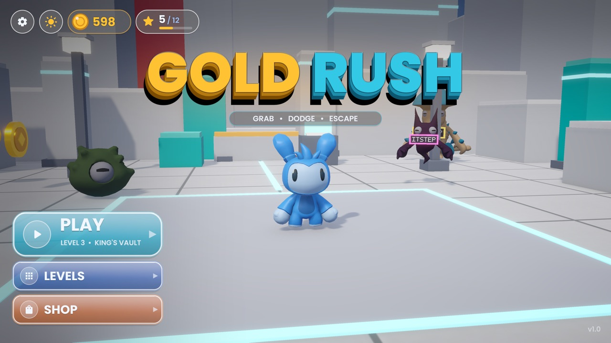

GOLD RUSH · Phase 10
Polish and build
The last phase. Night now changes the colour of the whole level and turns the lamps on. You add touch controls for phones (left half = move, right half = look), check the music, put every script in its final version and import our Levels 2–4. Then you check that your game is the same as ours, and build it for PC and Android.
1What you need
- Phase 9 is finished: Level 1 has the HUD, the countdown and the PAUSE, LEVEL COMPLETE and CAUGHT dialogs.
If you start here, import
GoldRush_Phase09_GameUI.unitypackage(and addMainMenuandLevel1to the Scene List again). - The Resources pack folder
Scripts/Final/. - The package
GoldRush_Levels2to4.unitypackage(from the Packages folder): our scenes Level 2, 3, 4 and the Daily Rush. - For the phone build: the Unity module Android Build Support (step 14).
Nothing on this page needs new typed code. You add components, fill in values and copy files.
2How day and night work
Press N (or the sun/moon button) and the level turns from day to night in 1.5 seconds. Nothing is loaded. One number does the job:
DayNight.Valuegoes from 0 (day) to 1 (night).- Every frame, DayNight mixes the day colour and the night colour with this number: sky, fog, sun, ambient light, bloom, vignette.
- Other things register (sign up) with DayNight:
- a material with a day colour and a night colour (floor, walls, blocks),
- a night light that is off by day and fades in at night (lamps, the hero's lantern, monster glows).
The sky, fog and sun already change since phase 9 (try N in Level 1). The floor and walls keep their day colour, and the lamps stay dark. You fix that in steps 3 and 4. All scripts are already in your project:
| Script | Job | Since |
|---|---|---|
DayNight | The blend. Mixes all colours and lights. | phase 1 |
EnvironmentSetup | Makes the sky, fog, sun and post-processing, then creates DayNight. | phase 1 |
NightLight | Put it on a Light: it only shines at night. | phase 1 |
DayNightButton | The round sun/moon button and the N key. | phase 1 |
DayNightTint | Put it on the level root: it gives the materials their day and night colours. | phase 9 |
DayNightPalette | One asset with the colours for all levels, so you type them only once. | phase 9 |
Save.Data.night. When a scene starts, DayNight.Create reads it, so the menu and every level start the way you left them. DayNight.Set() (used by the button and N) saves the new choice with Save.Persist(). A brand-new save starts at night. It uses Time.unscaledDeltaTime, so it also works while the game is paused.3Create the day/night palette
A palette is a list: for each material, its colour by day and by night. Every DayNightTint reads it, so all kit prefabs change colour in every level.
- In the Project window, open
Assets/GoldRush/Resources. - Right-click → Create → Gold Rush → Day Night Palette. Keep the name
DayNightPalette. (The name and the Resources folder must be exact: the code loads it withResources.Load("DayNightPalette").) - Select it. Under Entries, click + once for each row below (12 rows).
- Drag the material from
Assets/GoldRush/Materialsinto Material. Click a colour box and type the Hex value.
| # | Material | Day | Night | Used by |
|---|---|---|---|---|
| 0 | M_Floor | DBDEE6 | 212B52 | Floor_40m |
| 1 | M_Trim | 6B7385 | 262E4C | edges, lamp posts, pillars |
| 2 | M_BlockTop | EDF0F7 | 7080AD | tops of blocks and walls |
| 3 | M_OuterGround | 99A1B0 | 121730 | OuterGround |
| 4 | M_Block | CCD1DB | 525C80 | blocks, walls |
| 5 | M_Orange | FF9938 | B86133 | AccentBlock_Orange |
| 6 | M_OrangeTop | FFBD6B | D98047 | orange tops, Barrier_Orange |
| 7 | M_Pad | B2B8C7 | 171F40 | FloorPad_Cyan |
| 8 | M_Red | ED4C4C | 9E2B42 | AccentBlock_Red |
| 9 | M_RedTop | FF7870 | C24254 | red tops |
| 10 | M_Teal | 33BDBD | 1A6B85 | AccentBlock_Teal |
| 11 | M_TealTop | 6BDED9 | 298FA1 | teal tops |
Glowing materials (M_GlowCyan, M_GlowLamp, gold) are not in the list: they look the same by day and night.
4Tint the levels and light the lamps
Level 1
- Open
Level1.unity. Select the level rootLevel 1 - Training Yard. - Add Component → Day Night Tint. Leave its Entries list empty: the palette is added to it when the level starts.
- In the Hierarchy search box, type
LampLight. You see the 8 lamp lights. - Click the first one, Shift-click the last one (all 8 are selected).
- Add Component → Night Light. Set Night Intensity to 2.4.
- Clear the search box. Select
Level 1 - Training Yard/Static/ExitGate/LanternLight(the warm light over the gate). Add Component → Night Light, Night Intensity 1.8. - Save the scene.
Want this level to look different from the others? Add a row to its own Day Night Tint. It is used together with the palette.
The main menu
- Open
MainMenu.unity. SelectMenuDiorama. - Add Component → Day Night Tint. Leave the list empty. Save the scene.
The menu lamps already have a Night Light (phase 1), and the hero's lantern and the monster glows register themselves in code.
5Touch controls: the look area (right half)
A phone has no keyboard and no mouse. The screen is split in two invisible areas:
- Left half: touch and drag to move. A stick appears under your thumb. Push it to the edge to sprint (the ring turns orange).
- Right half: drag to turn the camera. A small ring shows under your finger.
Both areas are Images with alpha 0 and Raycast Target on: you can't see them, but they catch the touches. They must be the first children of GameUI, so every HUD button is drawn on top of them and still gets its click.
- Open
Level1.unity. - Build the table. Then drag
LookArea (right half)to the top of GameUI's children.
| Object (parent) | Create | Rect | Look | Other |
|---|---|---|---|---|
LookArea (right half) (GameUI) | Image | Anchors Min 0.5, 0, Max 1, 1, pivot 0, 0 · Left, Bottom, Right, Top 0 | no sprite, 000000 · 0, raycast | the right half |
Finger (LookArea) | Empty | bottom left, pivot 0.5, 0.5 · Pos 0, 0 · 150 × 150 | – | Canvas Group: Alpha 0, untick Blocks Raycasts |
Ring (Finger) | Image | stretch 0 | ring, 33C7E6 · 128 | |
Glow (Finger) | Image | stretch L B R T = -30, -30, -30, -30 | soft, 33C7E6 · 64 |
- Select
LookArea (right half). Add Component → Touch Look Area. - Drag
LookArea (right half)into Area,Fingerinto Marker and Marker Group.
OnDragadds the finger movement (e.delta, in pixels) to a total.TouchLookArea.Consume()gives back the movement since last time and resets it to zero. The ThirdPersonCamera calls it every frame and turns with it.- The Finger ring follows your finger and fades in while you drag.
6Touch controls: the joystick (left half)
| Object (parent) | Create | Rect | Look | Other |
|---|---|---|---|---|
MoveArea (left half) (GameUI) | Image | Anchors Min 0, 0, Max 0.5, 1, pivot 0, 0 · Left, Bottom, Right, Top 0 | no sprite, 000000 · 0, raycast | the left half |
Stick (MoveArea) | Empty | bottom left, pivot 0.5, 0.5 · Pos 0, 0 · 300 × 300 | – | Canvas Group: Alpha 0, untick Blocks Raycasts |
Bg (Stick) | Image | stretch 0 | circle, 121A33 · 115 | |
Ring (Stick) | Image | stretch 0 | ring, 33C7E6 · 153 | turns orange when you sprint |
Knob (Stick) | Empty | middle centre · Pos 0, 0 · 130 × 130 | – | follows the thumb |
Shadow (Knob) | Image | stretch L B R T = -4, -10, -4, 2 | circle, 000000 · 64 | |
Face (Knob) | Image | stretch 0 | circle, F2F7FF | |
Dot (Knob) | Image | stretch L B R T = 34, 34, 34, 34 | circle, 33C7E6 |
- Build the table. Put
MoveArea (left half)right underLookArea (right half). The order of GameUI's children is now:LookArea,MoveArea,WorldMarkers,HUD,Flash,Modal. - Select
MoveArea (left half). Add Component → Virtual Joystick. - Fill it: Area = MoveArea, Stick Base =
Stick, Knob =Knob, Radius 120, Group =Stick, Edge =Stick/Ring. - Select
GameUI. DragMoveArea (left half)into the Joystick field (the last empty field from phase 9). Save the scene.
IPointerDownHandler,IDragHandler,IPointerUpHandler: Unity UI calls these when a finger (or the mouse) goes down, moves and goes up on the area.- The stick appears where the thumb touches down, and follows it if it drags far away.
Valueis the stick direction, from -1 to 1. Very small values (under 0.12) count as zero. PlayerMotor moves with it and sprints whenValue.magnitude > 0.9.- The GameManager gives this joystick to the player:
Player.joystick = UI.Joystick.
7Test touch in the Device Simulator
- At the top of the Game view, click the Game dropdown → Simulator.
- Pick a phone, for example Samsung Galaxy S10. Click the rotate button to make it landscape.
- Press Play. Click and drag on the left half: the stick appears and the hero walks. Drag to the edge: the ring turns orange and the hero runs.
- Click and drag on the right half: the camera turns.
- When you are done, switch the dropdown back to Game.
In the Simulator, Application.isMobilePlatform is true. So the game does not lock the mouse, and the hint at the start shows the touch controls.
8Music
The music plays since phase 1. Its clip is the music entry in the Sounds list of GoldRushAssets. AudioFX does more than play it:
| Function | What it does | Who calls it |
|---|---|---|
AudioFX.StartMusic() | Plays the music on a loop at volume 0.3. If it already plays, nothing happens, so it does not restart when the scene changes. | menu, every level |
AudioFX.SetTension(true) | A monster is chasing you: the music gets a bit faster (pitch 1.07) and louder. | GameManager |
AudioFX.Duck(amount, seconds) | Makes the music quiet for a moment, so you hear the win or lose sound. | Win, Lose |
AudioFX.RefreshMute() | Reads Save.Data.music and Save.Data.sfx. | Settings, PAUSE toggles |
- Select
Assets/GoldRush/Resources/GoldRushAssets. Check that Sounds has an entrymusicwith the clipArt/Audio/music. - Press Play in Level1. Let a Slime chase you: the music gets faster. Pause and switch MUSIC OFF: it stops. Stop and start Play: it is still off.
9Replace every script with the final version
Some scripts got a short phase version earlier, so the project could compile and play after every phase. Now every script becomes the real one from the finished game.
- In Finder or Explorer, open the Resources pack folder
Scripts/Final/. It has the same folders asAssets/GoldRush/Scripts:Audio,Core,Gameplay,Level,UI,World. - Open
Final/Audio, select all files in it (Ctrl+A, Mac: Cmd+A) and copy them intoAssets/GoldRush/Scripts/Audio. Click Replace. - Do the same for the other five folders.
- Go back to Unity and wait for the compile. The Console must show no red errors.
.meta files are deleted and the scripts go missing from your scenes.Most files are already final since phase 9. The ones that really change:
| File | Was | New in the final file |
|---|---|---|
UI/GoldRushMenu.cs | phase 2 version | The hero in the menu wears the colour and hat you bought in the shop (Cosmetics.Apply). Confetti when you buy something. It can also build the whole menu from code if a scene has none. |
| all other files | final already | No change. Replacing them is safe. |
If you changed a script yourself (for example a speed value), write the change down before you copy. Then put it back in the final file.
10Import Levels 2–4
You built Level 1 by hand. Levels 2, 3 and 4 are bigger, so you import our scenes. They work with your scripts: every level has a LevelScene root with markers, a GameManager and a saved GameUI, like your Level 1. The package also has the Daily Rush scene (Game), which builds a new level from code every day.
- Assets → Import Package → Custom Package…. Pick
GoldRush_Levels2to4.unitypackage. - Keep everything ticked and click Import.
- Click Gold Rush → Fix Script Links in the top menu. It connects the scripts in the new scenes to your scripts. The Console says how many it fixed.
- Open
Level2.unity. Click a few objects: no component may say Missing (Mono Script).
| Scene | Name | Arena | Gold | Monsters | Power-ups | Par |
|---|---|---|---|---|---|---|
Level2 | Ghost Alley | 40 × 40 m | 8 | 2 Slimes, 1 Ghost | 2 | 1:00 |
Level3 | King's Vault | 48 × 48 m | 10 | 2 Slimes, 2 Ghosts, 2 Mushroom Kings | 3 | 1:25 |
Level4 | Gold Fever | 56 × 56 m | 13 | 3 Slimes, 3 Ghosts, 2 Mushroom Kings | 4 | 1:55 |
Game | Daily Rush | built from code (LevelBuilder) with today's date as the seed: a new level every day | ||||
These scenes have no Player and no camera: the GameManager makes them from code (PlayerMotor.Create, ThirdPersonCamera.Create). Monsters, coins and power-ups come from the empty markers. Each scene has its own Day Night Tint.
11All scenes in the Scene List
- File → Build Profiles. Click Scene List.
- Drag in
Level2,Level3,Level4andGamefromAssets/GoldRush/Scenes. - Check the order and that all six are ticked:
| Index | Scene |
|---|---|
| 0 | MainMenu (the game starts here) |
| 1–4 | Level1, Level2, Level3, Level4 |
| 5 | Game (Daily Rush) |
Now NEXT in the LEVEL COMPLETE dialog loads the next level, and every card on the Levels screen works.
12Final check: is it our game?
- Edit → Clear All PlayerPrefs. Now you play like a new player: 0 gold, only Level 1 open, night.
- Open
MainMenu, press Play and play the whole game once. Compare each screen with ours:
 Title (night)
Title (night)
Title (day) Levels
Levels Shop
Shop Level 1
Level 1 Level 1 at night
Level 1 at night Gate open
Gate open Win
Win Level 2
Level 2 Level 4
Level 4 Daily Rush
Daily Rush| Check | It is right when… |
|---|---|
| Console | No red errors, no yellow Gold Rush warnings. |
| Menu | The hero waves. PLAY, LEVELS, SHOP work. Gold and stars count up. Buy a colour: the hero changes colour, confetti. |
| Day / night | The sun/moon button (menu and HUD) and N switch it in 1.5 s. Floor, walls and blocks change colour, the lamps turn on. Load another level: it keeps your choice. |
| Levels | Level 1 → NEXT → Level 2 → … → Level 4. After Level 4 there is no NEXT (MENU and RETRY share the footer). |
| Save | Stars, best times, gold and unlocked levels are still there after you stop and start Play. |
| Settings | MUSIC OFF in the menu is also OFF in the PAUSE dialog, and the other way round. |
| Daily Rush | The Daily card loads a level built from code. Clear it once: +50 bonus gold. |
| Touch | In the Simulator: left half moves, right half looks. |
| Input | Edit → Project Settings → Player → Other Settings → Active Input Handling = Both. |
Your Level 1 is built from kit prefabs, so it can look a little different from ours in the details. Everything else is the same game.
Last, give your game a name and an icon: Edit → Project Settings → Player. Company Name: your name or school. Product Name: Gold Rush. Version: 1.0. Default Icon: an icon image (for example Resources/Icons/ic_star or your own picture).
13Build for PC
- File → Build Profiles.
- On the left, under Platforms, click Windows (on a Mac: macOS).
- If it is not the active platform, click Switch Platform and wait.
- Click Player Settings → Resolution and Presentation → Fullscreen Mode Fullscreen Window.
- Back in Build Profiles, click Build.
- Make a new folder
Builds/PCnext to theAssetsfolder (not inside it). Select it. - Wait. When it is done, open the folder and double-click
Gold Rush.exe(Mac:Gold Rush.app).
Press Esc in the game to pause and free the mouse. To close the game, use Alt+F4 (Mac: Cmd+Q).
14Build for Android
First install the Android tools (only once):
- Close Unity. Open Unity Hub → Installs.
- Click the gear next to your Unity version → Add modules.
- Tick Android Build Support with OpenJDK and Android SDK & NDK Tools. Click Install.
- Open the project again.
Then set up and build:
- File → Build Profiles → Android → Switch Platform. This can take a few minutes.
- Player Settings → Resolution and Presentation: Default Orientation Auto Rotation. Tick only Landscape Left and Landscape Right (untick both Portrait boxes).
- Other Settings: Scripting Backend IL2CPP, Target Architectures ARM64.
- Back in Build Profiles, click Build. Save as
Builds/Android/GoldRush.apk. - Copy the .apk to your phone and open it to install it.
15▶ Press Play
- Open
MainMenu.unityand press Play. Music plays. - Click the sun/moon button: the menu turns from night to day. The stage changes colour.
- Play Level 1. Press N: the level turns to night, the lamps turn on.
- Win Level 1 and click NEXT: Level 2 – Ghost Alley loads with the same HUD. Let the Ghost chase you: the music gets faster.
- Switch the Game view to Simulator and play with the left and right halves.
- Run your PC build (and your phone build) from the menu to the end of a level.
You should see: the complete game = our version. Menu, 4 levels and the Daily Rush, shop, save, day/night, touch controls and music, running as a real PC and Android app.
16Common problems
| Problem | Fix |
|---|---|
| Pressing N does nothing. | The scene needs a DayNightButton: the HUD DayNight button (phase 9) or the menu one. Only one per scene: two buttons switch twice. |
| The sky turns dark, but the floor and walls do not. | The palette must be at Assets/GoldRush/Resources/DayNightPalette.asset (exact name). The level root needs a Day Night Tint (step 4). The material in the palette must be the one the Renderer uses. |
| After Play, a material stays dark blue. | Something changed the material file itself. Day Night Tint uses copies. Set the colour back by hand (Materials folder). |
| "Create → Gold Rush → Day Night Palette" is missing. | DayNightPalette.cs must be in Scripts/World (phase 9). Wait for the compile. |
| Lamps shine during the day. | Add Night Light to every LampLight (step 4). |
| Touch does nothing in the Simulator. | The two areas need an Image with Raycast Target on and must be the first children of GameUI. The Joystick field of GameUI must be filled. Check Active Input Handling = Both. Click on the phone screen, not outside it. |
| The HUD buttons don't react any more. | The touch areas are drawn over them. Move LookArea and MoveArea to the top of GameUI's children. |
| The stick never appears. | Virtual Joystick → Group must be the Canvas Group on Stick, and Stick Base / Knob must be filled. |
| No music. | Settings → MUSIC must be ON. The Game view's Mute Audio must be off. GoldRushAssets → Sounds needs music. |
| After the import, Level 2 shows "Missing (Mono Script)". | Click Gold Rush → Fix Script Links (step 10). Your script files must have the real names (for example GameManager.cs in Scripts/Gameplay). |
| NEXT or a level card: "Scene 'Level2' couldn't be loaded". | Add the scene to the Scene List (step 11). |
| Red errors after copying the final scripts. | A file is missing or there are two copies (for example GameManager 1.cs). Delete the copy and copy the Final files again. |
| Build: "No scenes in build", or the build starts in a level. | Build Profiles → Scene List: MainMenu must be ticked and at index 0. |
| Android: "Android SDK not found" or Switch Platform is grey. | Install Android Build Support with OpenJDK and SDK & NDK in Unity Hub (step 14), then restart Unity. |
| The phone game is portrait. | Player Settings → only Landscape Left and Landscape Right ticked. |
Checkpoint package: GoldRush_Phase10_Final.unitypackage – the complete game.
Levels.All in Data.cs, a new hat in Catalog.Hats, or a new monster colour. See the Exercises.